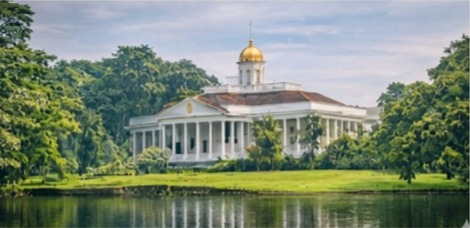

Konservasi Tanaman
Kebun Raya Bogor berfungsi sebagai pusat konservasi berbagai jenis tanaman tropis.
- Pusat konservasi tanaman tropis
- Penelitian botani

Nilai Sejarah
Kebun Raya Bogor menyimpan berbagai peninggalan sejarah sejak zaman kolonial.